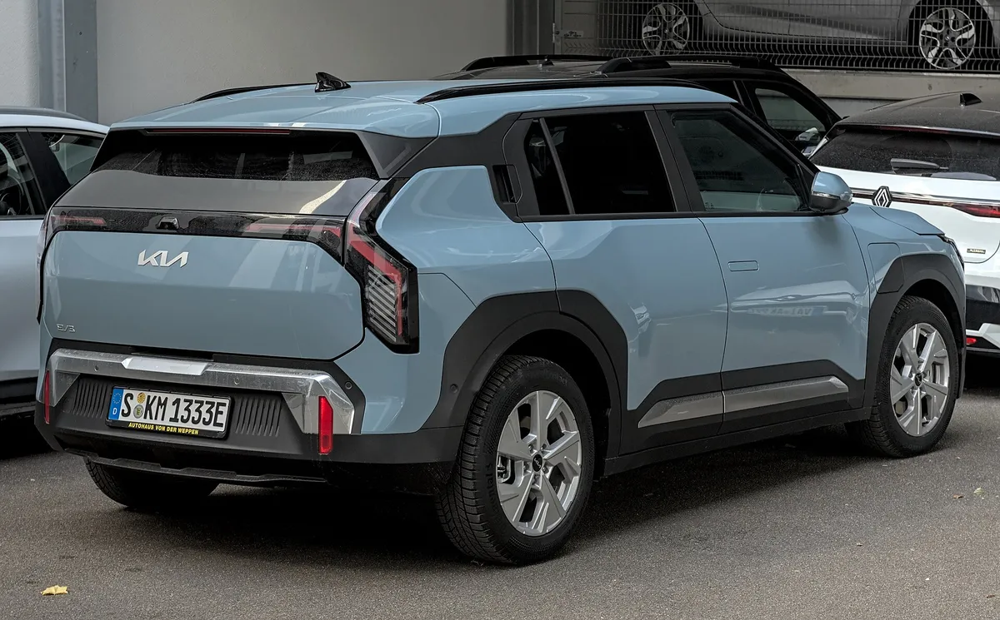
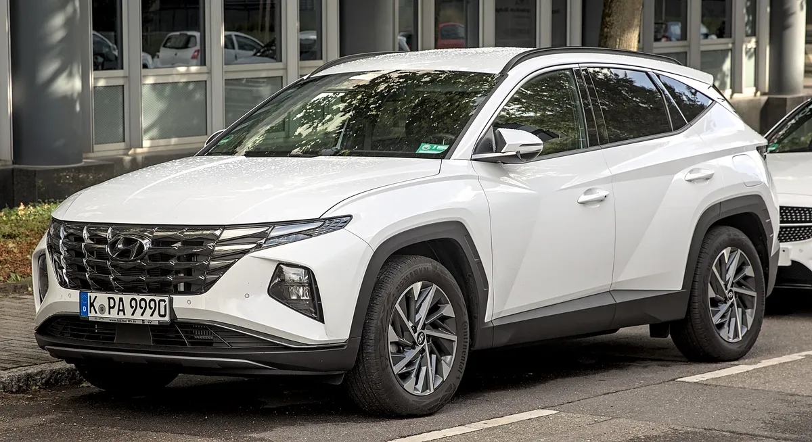

▲ 신차 계약 전 인도 예상 시점을 확인하는 것이 출고 대기 관리의 출발점이다 ⓒ CarPrism (AI 생성 이미지)
"지금 계약하면 언제 받나?" 9월 30일까지 하루밖에 남지 않았지만, 신차 계약을 앞둔 소비자에게 더 중요한 질문은 이 차가 올해 안에 나오는가, 내년으로 넘어가는가다. 오토트리뷴과 겟차(Getcha)가 9월 초 공개한 기아·현대·제네시스 출고 대기 안내를 교차해 보면, 같은 9월 계약이라도 차종에 따라 11월에 받는 차와 2027년에 받는 차가 갈린다.
1. 이 납기표, 어떻게 읽어야 하나
먼저 짚어야 할 것은 날짜다. 오토트리뷴은 현대차 납기를 9월 2일, 기아·제네시스 납기를 9월 4일에 보도했고, 겟차의 '2026년 9월 출고기간 정리'는 9월 1일 수정본이다. 즉 이 기사에 나오는 숫자는 모두 9월 초 안내 기준이다. 이 기사를 읽는 9월 29일 시점에는 대기 물량이 줄었거나, 반대로 인기 차종은 계약 순번이 밀렸을 수 있다.
다만 기아 전기차 납기는 9월 28일 시사저널e 기사가 EV5 약 7개월, EV3·EV4 약 5개월, EV6 약 4개월, EV9 약 2.5개월로 같은 수치를 전하고 있어, 9월 말에도 크게 바뀌지 않은 것으로 보인다. 그 밖의 차종은 9월 말 기준으로 새로 확인되는 납기 변동 보도를 찾지 못했다.
📍 납기는 '확정 인도일'이 아니라 '안내 기간'이다
출고 대기 기간은 제조사·영업점이 공지하는 평균 안내치다. 트림·색상·옵션·구동방식에 따라 달라지고, 생산 계획이나 부품 수급에 따라 바뀔 수 있다. 실제 인도일은 반드시 계약 시 영업 담당자에게 서면·문자 등 남는 방식으로 확인해 두는 편이 좋다.
▲ 계약 전 인도 예상 시점과 옵션별 추가 기간을 확인하는 것이 출고 대기 관리의 첫 단계다 ⓒ CarPrism (AI 생성 이미지)
2. 기아 — 4~5주 차종과 2027년 차종이 갈린다
오토트리뷴은 기아 납기를 크게 세 묶음으로 분류했다. 쏘렌토 HEV·니로 HEV·K5·K8은 4~5주, 카니발 가솔린은 5~6주라 9월에 계약하면 10~11월 인도가 가능한 권이다. 스포티지(가솔린·HEV) 3개월, 셀토스 3.5개월, EV6 4개월은 계약 시점이 늦어질수록 12월 턱걸이 또는 연초 인도로 넘어갈 수 있는 구간이다.
| 구분 | 차종 | 대기 기간 |
|---|---|---|
| 연내 인도 가능권 | 쏘렌토 HEV, 니로 HEV, K5, K8 | 4~5주 |
| 카니발 가솔린 | 5~6주 | |
| 카니발 HEV | 2.5개월 | |
| EV9(겟차·오토트리뷴 전기차 기사 기준) | 2.5개월 (8월 4~5주에서 늘어남) | |
| 9월 계약이 마지막 기회 | 스포티지(가솔린·HEV) | 3개월 |
| 셀토스 | 3.5개월 | |
| EV6 | 4개월 | |
| 2027년 인도 | 카니발 하이리무진 4인승 | 6개월 (2027년 3월경) |
| EV5 | 7개월 (2027년 4월경) | |
| EV3·EV4 | 각 5개월 (9월 초 계약 기준 2027년 초 인도로 계산됨) | |
| PV5 | 5개월 | |
| 레이(가솔린·EV) | 10개월 (2027년 7월경) |
오토트리뷴은 이 같은 납기를 기준으로 "9월 초에 계약하지 않으면 인기 SUV 모델들이 내년 출고로 넘어가는 상황"이라고 짚었다. 기아 전기차 납기는 오토트리뷴(전기차 출고 적체 기사)와 겟차, 9월 28일 시사저널e가 같은 수치를 전한다. 겟차 기준 8월 대비 EV3는 3개월에서 5개월, EV4는 2개월에서 5개월, EV5는 4개월에서 7개월, EV9는 4~5주에서 2.5개월로 늘었다. 오토트리뷴은 그 배경으로 지자체 전기차 보조금 소진을 앞둔 신청 쏠림과 전동화 생산 라인 재편을 꼽았다.

▲ 9월 기준 출고 대기가 약 5개월로 안내된 기아 EV3 ⓒ Wikimedia Commons
📍 전기차는 '보조금'이 납기의 변수다
오토트리뷴은 기아가 보조금 자격을 확인한 뒤 생산을 배정하기 때문에 지자체 보조금 잔여 예산이 실제 인도 시점을 좌우할 수 있다고 전했다. 겟차 안내에도 "보조금 공모 상황에 따라 실제 납기가 단축될 수 있다"는 문구가 있다. 이 부분은 지자체별 예산 상황이 다르므로 계약 전 해당 지역 잔여 예산을 별도로 확인해야 한다. 오토트리뷴은 비선호 옵션이 생산 대기를 4~5주 늘릴 수 있다고도 전했다.
✅ 기아 계약 전 체크
· 계약일 + 대기 기간으로 예상 인도월을 직접 계산해 보고, 연내 인도가 목표라면 스포티지·셀토스·EV6는 서둘러야 함
· 레이·EV5·카니발 하이리무진은 2027년 인도를 전제로 계약하는 것이므로 취소·변경 조건을 함께 확인
· 9월 기준 표이므로 10월 납기표가 나오면 다시 비교
3. 현대차 — 그랜저는 1개월, 베뉴는 6개월
오토트리뷴이 정리한 현대차 납기는 차종별 격차가 크다. 쏘나타는 가솔린·LPi·택시 1개월, 하이브리드 2개월이고, 그랜저는 가솔린·LPi 1개월, 하이브리드 2.5개월이다. SUV는 싼타페 1개월, 팰리세이드 기본 1개월(하이루프 2WD 사양은 약 2.5개월), 코나 가솔린·N라인 4개월·하이브리드 3개월이며, 베뉴는 가장 긴 6개월로 색상 수급 문제가 언급됐다.
| 차종 | 대기 기간 | 비고 |
|---|---|---|
| 아반떼(26MY) | 가솔린 3개월 / N 1개월 | 하이브리드는 10월까지 추가 생산 후 일정 공지 예정. 겟차는 이 3개월을 '8세대 완전변경 가솔린'으로 표기해 출처 간 표기 차이가 있음 |
| 쏘나타 | 가솔린·LPi·택시 1개월 / 하이브리드 2개월 | – |
| 그랜저 | 가솔린·LPi 1개월 / 하이브리드 2.5개월 | 가솔린 발급 가능 재고 2,000대 안내. 파노라마 선루프 추가 시 +1개월, 캘리그래피 고급 옵션 시 +1~2개월 |
| 싼타페 | 가솔린·하이브리드 1개월 | 발급 가능 재고 가솔린 450대·하이브리드 2,200대 |
| 팰리세이드 | 기본 1개월 | 하이루프 특장 추가 시 +3주, 하이루프 2WD 사양은 약 2.5개월 |
| 코나 | 가솔린·N라인 4개월 / 하이브리드 3개월 / EV 1개월 | 9월 초 계약 시 연초 인도 가능성 |
| 베뉴 | 6개월 | 색상 수급 문제 언급 |
| 아이오닉 5·6 | 기본 1개월 | 발급 가능 재고 각 550대·700대 |
| 아이오닉 9 | 파노라마 선루프 포함 1.5개월 | – |
| 스타리아 | LPi·하이브리드 1개월 / EV 4~6개월 | – |
| 넥쏘(26년형) | 1개월 | 재고 400대 |
| 투싼 | 신규 생산 요청 불가 | 다음 장 참고 |
▲ 출고를 기다리는 신차 물량. 발급 가능 재고가 있는 차종은 대기 기간이 상대적으로 짧다 ⓒ CarPrism (AI 생성 이미지)
4. 제네시스 — 전 차종 1개월이지만 옵션이 변수
오토트리뷴은 제네시스가 9월 공지에서 승용·SUV 전 차종의 기본 대기를 약 1개월 수준으로 안내했다고 보도했다. 8월 말 기준 즉시 출고 가능한 물량으로 G80 약 3,000대, GV70 약 1,600대, GV80 약 1,300대, G90 약 500대가 언급됐다. 옵션과 재고 사양이 맞으면 계약 직후 인도도 가능하다는 설명이다.
| 차종 | 기본 대기 | 추가 기간이 붙는 경우 |
|---|---|---|
| G70·G70 슈팅브레이크 | 1개월 | – |
| G80 | 1개월 | 재고 약 3,000대(8월 말) |
| G90·롱휠베이스 | 1개월 | 롱휠베이스 전용·블랙 트림 +1주 / 재고 약 500대 |
| GV60 | 1개월 | 마그마는 약 2개월(별도 기사: 도장 2주+성능 검수 3주) |
| GV70 | 1개월 | 무광(매트) 컬러·2WD·스포츠 트림 +2주 / 재고 약 1,600대 |
| GV80·쿠페 | 1개월 | 재고 약 1,300대. 2027년형 연식변경(9월 중순 예정)에 따라 배정 일정 변동 가능 |
📍 재고차 vs 새로 생산하는 차
같은 차종이라도 재고 사양과 맞는 색상·옵션을 고르면 즉시 인도, 재고에 없는 조합이면 새로 생산해야 한다. 연식변경 시기에는 26년형 재고와 27년형 신규 배정이 섞이는 만큼 연식과 옵션을 계약서에 정확히 적는 것이 중요하다. 다만 27년형의 세부 변경 사항과 가격은 본 기사 범위에서 확인되지 않았다.

▲ 마그마 트림은 전용 도장과 성능 검수 공정 때문에 납기가 약 2개월로 안내된 제네시스 GV60 마그마의 실내 ⓒ Wikimedia Commons
▲ 계약에서 인도까지의 시간은 재고 여부와 옵션에 따라 1주에서 수개월까지 달라진다 ⓒ CarPrism (AI 생성 이미지)
5. 투싼 계약 유의점 — '구형은 신규 불가, 컨버전도 없다'
투싼은 이번 납기표에서 가장 특이한 차종이다. 오토트리뷴 현대차 납기 기사와 겟차는 현행 투싼(NX4)에 대해 신규 생산 요청이 불가하고, 기존 요청 건 중 생산이 가능한 건에 한해 9월 14~30일 한정 생산된다고 안내했다. 또 완전변경(풀체인지) 전환 시 구형 원요청일을 보전해 주는 컨버전도 진행되지 않는다고 전했다.

▲ 현행 4세대 투싼(NX4). 신규 생산 요청이 제한된 채 신형 전환을 기다리고 있다 ⓒ Wikimedia Commons
✅ 투싼 관련 정리
· 현행 투싼 신규 계약은 원칙적으로 어렵다는 안내 (재고·취소분 여부는 영업점 확인 필요)
· 구형으로 계약해 두고 신형으로 갈아타는 컨버전은 진행되지 않는다고 안내됨
· 신형 투싼(NX5)은 겟차 안내에서 신규 계약 시기 미정
· 출시 시점은 매체마다 2026년 3분기 유력, 2027년 상반기 전망 등으로 엇갈리며 현대차의 공식 발표는 아직 확인되지 않음
일부 매체는 5세대 투싼(NX5)이 디젤을 없애고 하이브리드·플러그인 하이브리드 중심으로 나올 것으로 전하지만, 이는 공식 발표가 아니라 매체 보도 수준이다. 겟차는 "신형 출시를 기다리는 쪽이 현실적"이라고 안내했다. 급하게 차가 필요하다면 투싼 대신 싼타페(1개월)나 스포티지(3개월) 같은 대안을 비교해 볼 수 있다. 투싼 신규 계약 재개 여부와 시점은 출처마다 다르거나 불분명해 단정할 수 없다.
6. 옵션 하나가 납기를 바꾼다
같은 차종이라도 옵션과 색상에 따라 대기 기간이 크게 달라진다. 오토트리뷴 안내를 모아 보면 다음과 같다.
| 브랜드·차종 | 옵션·사양 | 추가 기간 |
|---|---|---|
| 현대 그랜저 | 파노라마 선루프 | +1개월 |
| 현대 그랜저 | 캘리그래피 고급 옵션 | +1~2개월 |
| 현대 팰리세이드 | 하이루프 특장 / 하이루프 2WD | +3주 / 약 2.5개월 |
| 제네시스 GV70 | 무광 컬러, 2WD, 스포츠 트림 | +2주 |
| 제네시스 G90 | 롱휠베이스 전용·블랙 트림 | +1주 |
| 제네시스 GV60 | 마그마 | 기본 1개월 → 약 2개월 |
| 기아 전기차 | 비선호 옵션 | +4~5주 (오토트리뷴) |
✅ 옵션 선택 전 확인할 것
· 원하는 색상·옵션이 재고(발급 가능 재고) 사양과 일치하는지 먼저 확인
· 옵션 추가가 납기를 얼마나 늘리는지 영업 담당자에게 서면·문자로 받아 두기
· 제네시스처럼 '사전 상담이 필수'라는 안내가 붙은 사양은 계약 전 상담이 우선
7. 연말·연초 인도 전략 — 이렇게 계약하라
▲ 연내 인도가 목표라면 '희망 인도일'을 먼저 정하고 거기서 대기 기간을 거꾸로 계산한다 ⓒ CarPrism (AI 생성 이미지)
| 목적 | 추천 전략 |
|---|---|
| 연내 인도가 급하다 | 재고 물량이 넉넉한 차종(그랜저 가솔린, 싼타페, 제네시스 전 차종, 아이오닉 5·6 등)을 우선 검토하고 재고 사양의 색상·옵션에 맞춤 |
| 인기 SUV·전기차를 원한다 | 스포티지·셀토스·EV6는 대기 3~4개월 구간이라 계약 시점이 늦을수록 연초로 밀릴 수 있음을 인지 |
| 레이·EV5·하이리무진 | 2027년 인도 전제로 계약하되 취소·옵션 변경 시 계약 순번이 어떻게 되는지 확인 |
| 투싼을 원한다 | 구형 계약은 사실상 어렵고 컨버전도 없다는 안내이므로 신형 공식 발표를 기다리거나 대안 차종 검토 |
| 연식변경 직전·직후 | 26년형 재고와 27년형 신규 배정을 명확히 구분하고 계약서에 연식 표기 |
📍 판매 조건은 별개다
출고 시점과 별개로 할인·프로모션 조건은 생산월·계약월 등에 따라 달라질 수 있다. 9월 판매 조건은 별도 기사를 참고하면 되며, 본 기사에서는 확인하지 않았다.
8. 요약
9월 초 안내 기준으로 기아 쏘렌토 HEV·K5·K8, 현대 그랜저·쏘나타 가솔린, 제네시스 전 차종은 대략 1개월 안팎이면 받을 수 있다. 반면 기아 레이(10개월)·EV5(7개월)·카니발 하이리무진(6개월)과 현대 베뉴(6개월)는 지금 계약해도 2027년에 가까운 인도가 예상된다.
현행 투싼은 신규 생산 요청이 불가하고 컨버전도 진행되지 않는다고 안내됐다. 신형 출시 시기와 신규 계약 시점은 공식 발표 전이라 확정할 수 없다.
납기표는 안내치일 뿐 확정 인도일이 아니다. 9월 말 이후 소진·재배정으로 달라질 수 있으므로 계약 직전에 영업점에서 차종·트림·옵션별 인도 예상 시점을 문서로 다시 확인하는 것이 가장 확실하다.